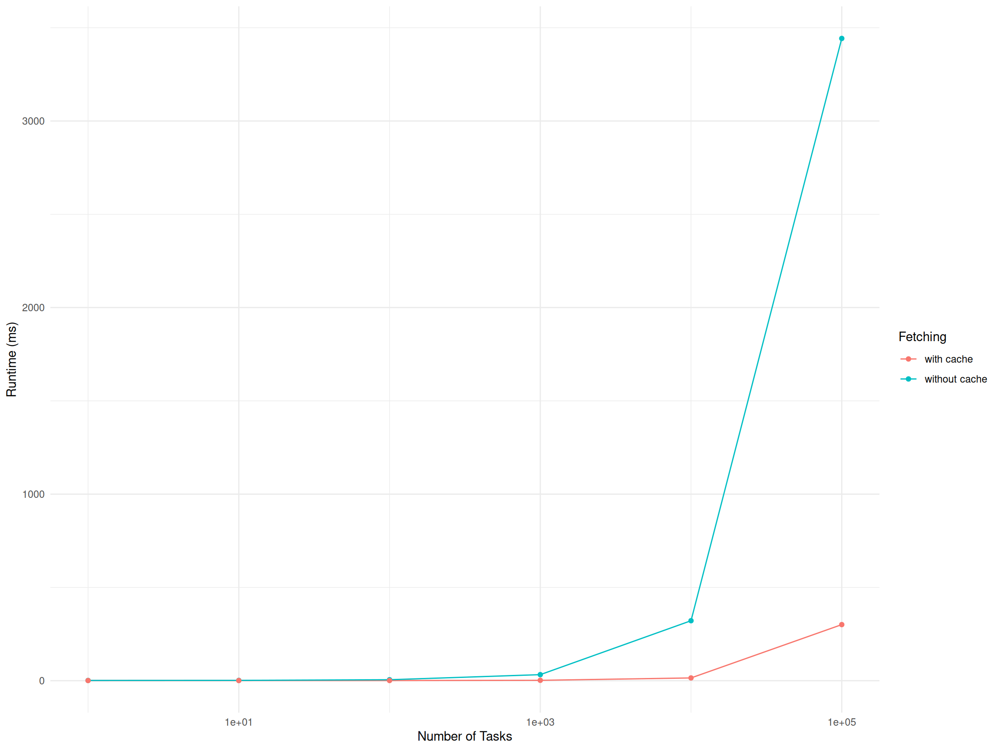

xss = list(list(x1 = 1))
keys = rush$push_running_tasks(xss)Scope
This report analyzes the runtime and memory usage of rush across the most recent package versions. It focuses on the core methods $push_running_tasks(), $push_results() and $fetch_finished_tasks(). This report helps users assess whether observed runtimes fall within expected ranges. Substantial anomalies in runtime should be reported by opening a GitHub issue. Benchmarks are executed on a high‑performance cluster optimized for multi‑core throughput rather than single‑core speed. Consequently, single‑core runtimes may be faster on a modern local machine.
Summary of Latest rush Version
We summarize the results for the latest rush version. The overhead of $push_running_tasks() and $push_results() is below a half millisecond. The runtime of $fetch_finished_tasks() depends on the number of tasks and the cache size. When no tasks are cached, the runtime for 1 to 1000 tasks is around 1 ms When one new task is fetched and the rest is cached, the runtime ranges between 12 and 37 ms depending of the cache size.
Push Running Tasks
The runtime of $push_running_tasks().
| rush | Number of Parameters | Number of Tasks | Runtime, ms |
|---|---|---|---|
| 10 Parameters | |||
| 0.4.1 | 10 | 1 | 0.48 |
| 1 Parameter | |||
| 0.4.1 | 1 | 1 | 0.49 |
Push Results
The runtime of $push_results().
yss = list(list(y = 1))
rush$push_results(keys, yss)| rush | Number of Parameters | Number of Tasks | Runtime, ms |
|---|---|---|---|
| 10 Parameters | |||
| 0.4.1 | 10 | 1 | 0.37 |
| 1 Parameter | |||
| 0.4.1 | 1 | 1 | 0.37 |
Fetch Finished Tasks
The runtime of $fetch_finished_tasks().
rush$fetch_finished_tasks()| rush | Number of Parameters | Number of Tasks | Runtime, ms |
|---|---|---|---|
| 10 Parameters | |||
| 0.4.1 | 10 | 1 | 1.4 |
| 0.4.1 | 10 | 10 | 1.8 |
| 0.4.1 | 10 | 100 | 5.7 |
| 0.4.1 | 10 | 1,000 | 37 |
| 0.4.1 | 10 | 10,000 | 390 |
| 0.4.1 | 10 | 100,000 | 4400 |
| 1 Parameter | |||
| 0.4.1 | 1 | 1 | 1.4 |
| 0.4.1 | 1 | 10 | 1.8 |
| 0.4.1 | 1 | 100 | 5.3 |
| 0.4.1 | 1 | 1,000 | 33 |
| 0.4.1 | 1 | 10,000 | 320 |
| 0.4.1 | 1 | 100,000 | 3400 |
Fetch Finished Tasks with Cache
The runtime of $fetch_finished_tasks() when one new task is fetched and the other tasks are cached.
rush$fetch_finished_tasks()| rush | Number of Parameters | Number of Tasks | Runtime, ms |
|---|---|---|---|
| 10 Parameters | |||
| 0.4.1 | 10 | 1 | 0.92 |
| 0.4.1 | 10 | 10 | 0.94 |
| 0.4.1 | 10 | 100 | 1.2 |
| 0.4.1 | 10 | 1,000 | 4.0 |
| 0.4.1 | 10 | 10,000 | 51 |
| 0.4.1 | 10 | 100,000 | 970 |
| 1 Parameter | |||
| 0.4.1 | 1 | 1 | 0.91 |
| 0.4.1 | 1 | 10 | 0.94 |
| 0.4.1 | 1 | 100 | 1.1 |
| 0.4.1 | 1 | 1,000 | 2.2 |
| 0.4.1 | 1 | 10,000 | 15 |
| 0.4.1 | 1 | 100,000 | 300 |
